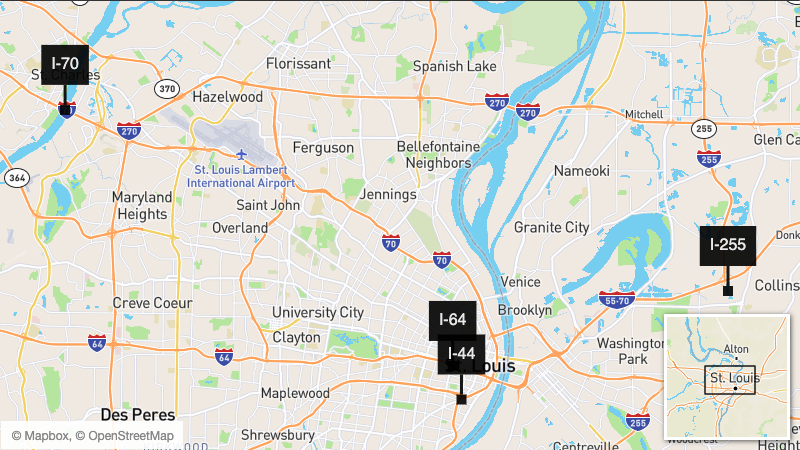

Multiple highway closures will slow St. Louis-area traffic in 2020
- I-70 at the Blanchette Bridge
- I-44 near Jefferson Avenue and the I-55 interchange in St. Louis
- I-64 ramps near downtown St. Louis
- I-255 in Illinois between Collinsville Road and I-64
